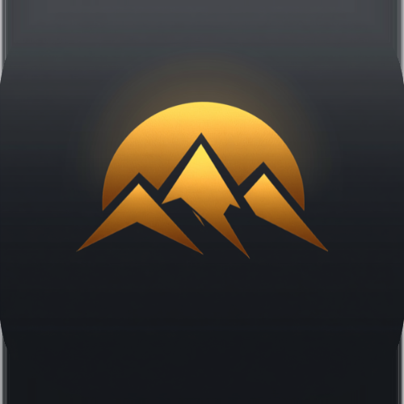
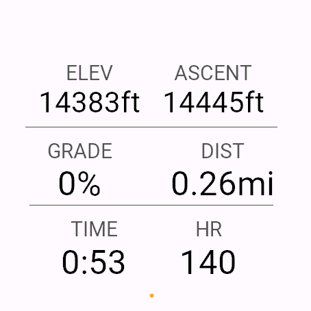
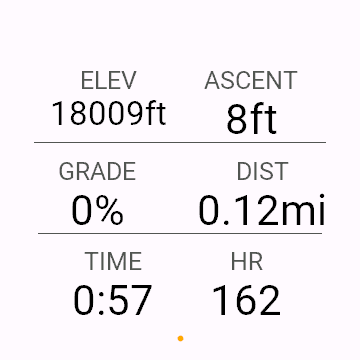
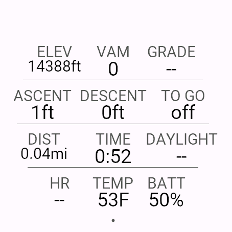
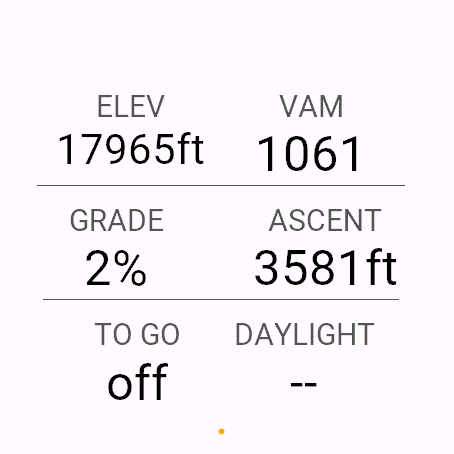
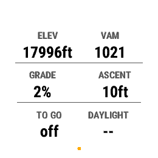

Cairn｜专为爬升打造的Garmin登山数据字段
Cairn是专为「爬升」而非平地设计的全屏登山数据字段。免费版显示6项数据，升级版Cairn Pro将其扩展至12项，全部集中在一屏。
结论：仅免费版就能使用标高・累积爬升・坡度等6项对爬升有帮助的数据，想要更多时可升级到Cairn Pro获得12项数据。

Cairn / Cairn Pro
一屏之内，只显示爬升时真正需要的数据，无需滚动。所有单元格统一格式(小标签+大数字)绘制，一眼即可读取。
⌚ 在商店查看 Cairn(免费) ⌚ 在商店查看 Cairn Pro适合什么样的人？
- 希望在徒步、登山、越野跑时一眼看清标高与坡度的用户
- 不想在活动画面中反复滚动，希望一屏完结的用户
- 需要登顶目标剩余距离、日落倒计时等直接关系登山计划的数据的用户
- 想先免费试用，需要时再升级付费版的用户
免费版与Cairn Pro的区别
| 项目 | Cairn(免费) | Cairn Pro |
|---|---|---|
| 显示项目数 | 6项 | 12项 |
| 内容 | ELEV・ASCENT・GRADE・DIST・TIME・HR | 以上6项 + VAM・DESCENT・TO GO・DAYLIGHT・TEMP・BATTERY |
| 登顶目标 | 不支持 | 倒计时显示距设定目标的剩余 |
| 日落倒计时 | 不支持 | 通过GPS位置在手表内计算，无需手机 |
| 窄屏机型 | — | 自动切换为6项・更大字号的Focus显示 |
| 价格 | 完全免费 | 5次活动免费试用后，一次性支付US$2.49 |
| 通信 | 无・无需权限 | 仅与KiezelPay服务器通信(解锁确认用) |





适配机型
支持69款Garmin手表：Forerunner 70／165・165 Music／170・170 Music／255・255 Music／265・265S／570（42・47mm）／955／965／970、Venu 2・2 Plus・2S／Venu 3・3S／Venu 4（41・45mm）、vívoactive 5・6、fēnix 6・6S・6 Pro・6S Pro・6X Pro／fēnix 7・7S・7X・7 Pro・7S Pro・7X Pro（含无Wi-Fi型号）／fēnix 8 AMOLED（43・47mm）／fēnix 8 Solar（47・51mm）／fēnix 8 Pro（47・51mm）／fēnix E／fēnix 9（43・47mm）／fēnix 9 Pro（43・47・51mm）／fēnix 9 Pro Solar（47・51mm）、epix (Gen 2)／epix Pro (Gen 2)（42・47・51mm）、enduro・enduro 3、Instinct 3 AMOLED（45・50mm）、MARQ (Gen 2)、Approach S50／S70（42・47mm）、Descent G2／Mk3（43・51mm）、D2 Air X10／Mach 1／Mach 2／Mach 2 Pro（包括tactix、quatix等相同平台的机型）
※ Pro 版支持其中63款机型，不支持 fēnix 6／6S／6 Pro／6S Pro／6X Pro 和 enduro（这些机型的数据字段无法连接支付服务，无法购买 Pro）。这些机型请使用免费版。
价格与购买方式
免费版Cairn只需安装即可，6项数据全部永久免费，不产生任何通信，也不要求任何权限。
Cairn Pro在商店中显示为免费，但实为付费版本。开始使用后的前5次活动可免费试用全部功能。之后在解锁之前，数据字段会显示6位数代码及「www.kzl.io/code」。一次性支付US$2.49(无订阅费)即可永久解锁全部12项数据。在手机上打开www.kzl.io/code并输入代码完成支付后，数分钟内自动解锁。支付由第三方服务KiezelPay(信用卡／PayPal)处理，并非Garmin官方。购买一次后，同一Garmin账户下的其他适配机型无需再次购买。
常见问题
Q. Cairn可以免费使用吗？
A. 可以。免费版Cairn是一款显示6项数据的登山数据字段，完全免费，不要求任何通信或权限。
Q. Cairn Pro有什么不同？
A. Cairn Pro是扩展到12项数据的升级版，增加了VAM(爬升速率)・累积下降・距登顶目标・距日落时间・气温・手表电量。最初5次活动可免费试用全部功能，之后需一次性支付US$2.49解锁。
Q. Cairn Pro的支付在哪里进行？
A. 并非Garmin官方支付，而是由第三方服务「KiezelPay」处理。试用次数用完后，数据字段会显示6位数代码和网址，在手机上打开该网址并输入代码即可完成支付(支持信用卡・PayPal)。
Q. 支持哪些机型？
A. 支持Forerunner 165／255／265／570／955／965／970、Venu 2／3／4、vívoactive 5／6、fēnix 6／7／8／8 Pro／E／9、epix (Gen 2)・epix Pro、enduro、Instinct 3 AMOLED、MARQ (Gen 2)、Approach S50／S70、Descent G2／Mk3、D2等，共计69款机型（Pro 版为63款，不含 fēnix 6 系列和 enduro）。完整机型列表请参阅“适配机型”部分。
Q. 数据字段与表盘有什么区别？
A. 数据字段是在跑步、徒步等活动记录过程中可添加的显示画面。Cairn/Cairn Pro属于此类型，因此与Aurum等常显表盘不同，仅在活动记录期间显示。